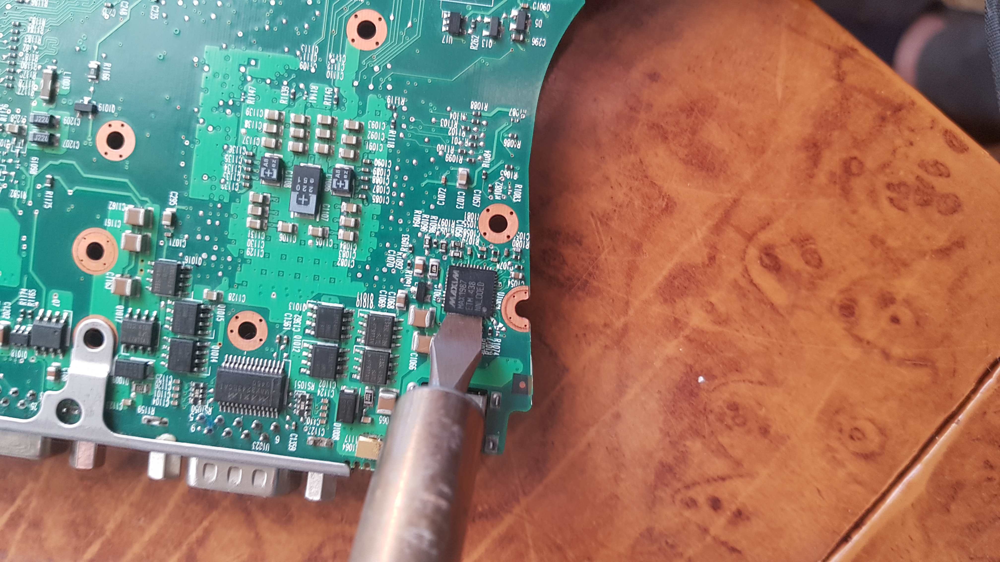
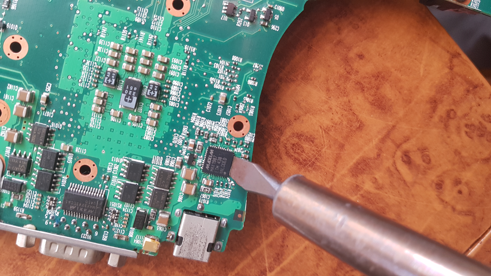

On the repair of laptop (especially aging) power delivery |
| Many aging laptops have a problem, whereupon they don't work at all. You plug the AC adapter into them, you try to run them off the battery, alas, they do not cooperate with your attempts at necromancy, rather they scoff at it. They will not be woken from their ancient sleep and upon pressing the power button all you get in response is a flash of the LEDs and a couple revs of the fan, but no signs of life at all. The issue at hand here is the warping of the case and with it, the subsequent warping of the motherboard that is ripping the traces of the power delivery chip. Over time, a laptop's case will warp ever so slightly from use. Since the motherboard is screwed tightly to the case, this will warp the motherboard slightly as well. In doing so, it will crack the solder on the power delivery chip on the motherboard, especially if it is soldered with lead-free solder. The solution is to reflow the solder and establish a connection once again. To do so you will need:
The first task is to open the laptop to the point where you cand gain full physical access to the power delivery stage. The power delivery stage should be somewhere near the actual power connector. If it isn't then your system was designed by an idiot. Nevertheless, once you have gained access to the power delivery stage, you will need to locate the actual chip that does the power delivery. It is usually a small QFP (Quad Flat Package) chip with many contacts. If you are unsure, search for your particular chip on the internet and you should get a data sheet. Once you have located the chip, heat your soldering iron and prepare for battle. Flux the legs of the chip and place the soldering iron across the contacts of the pins and the board for about a second. Do this on all four sides of your chip and you should be good to go.  Reassemble the laptop and try it out. If the procedure hasn't worked, then either the issue is something else or you haven't done it properly. Your mileage may vary. I have "repaired" two laptops using this method - an HP Compaq nc6000 and an Acer Travelmate 291dci. While the HP Compaq works just fine, the Acer has issues with Intel Speedstep. As such, it runs the CPU at full clock and full power draw constantly, even while doing nothing, and consumes more power than it should. If I try to install Speedstep utility, it hangs on startup and I need to boot into safe mode to remove it. |
 |
| Computers |
| Reviews |
| Repair |
| PC game reviews |
| Fountain pens |
| Reviews |
| Repair |
| Misc |